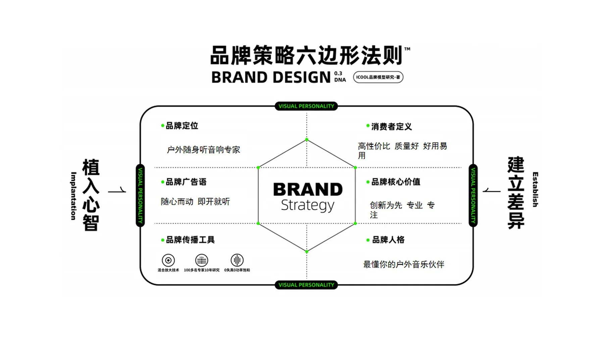
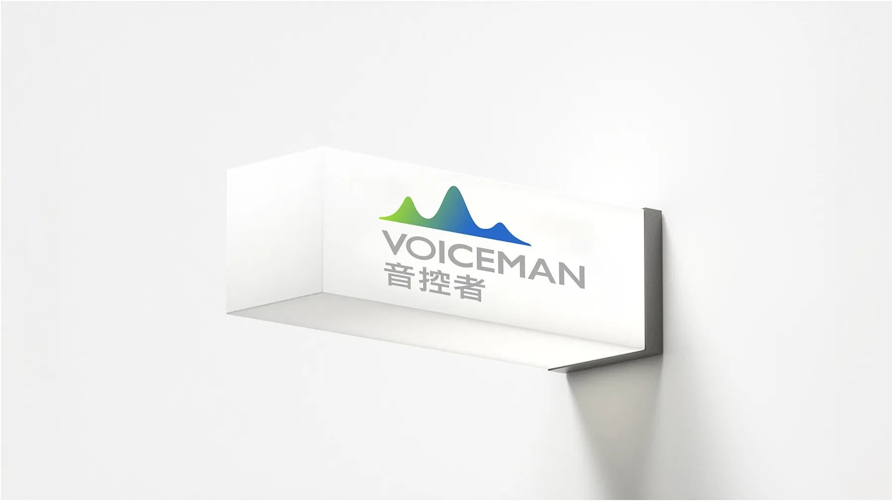
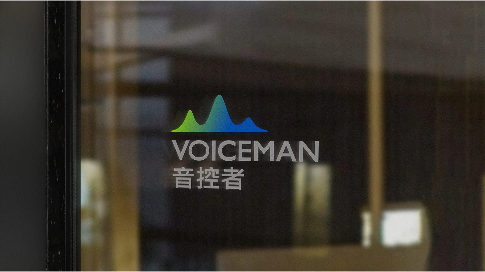
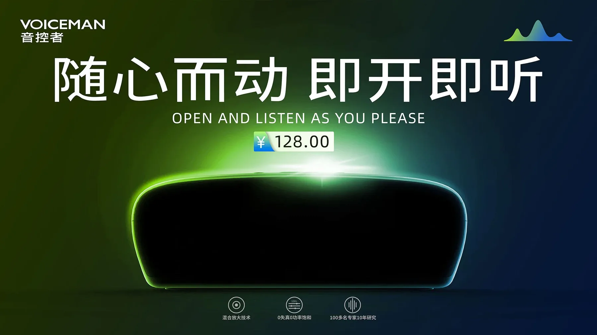
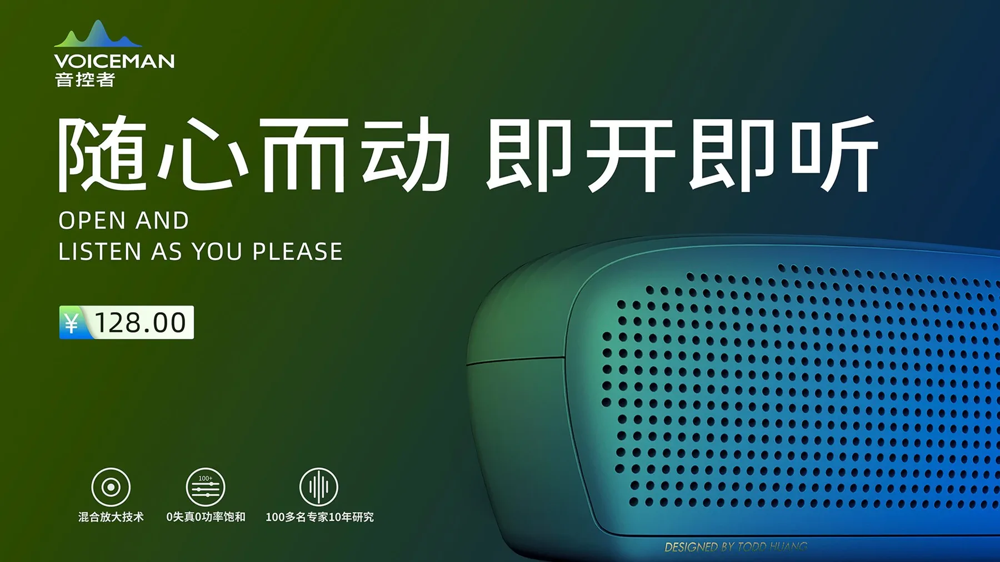
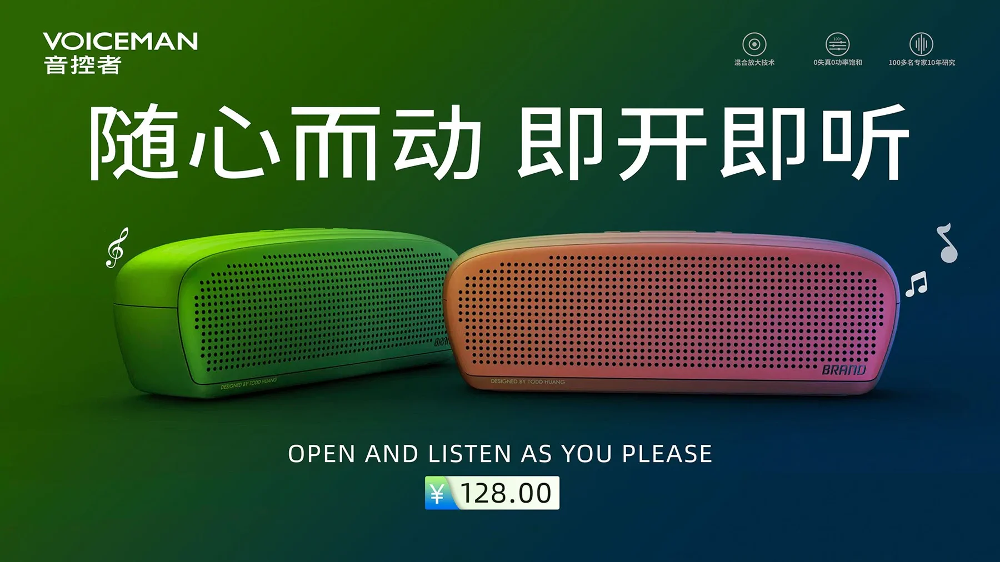
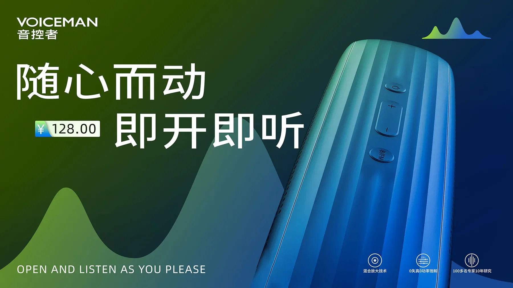
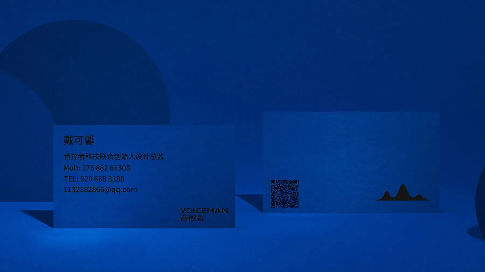

音控者户外音箱品牌视觉系统
围绕便携户外音箱建立品牌定位、标志与声波图形语言，并将统一的绿蓝渐变延展到 门头、产品主视觉和销售传播。项目强调“随心而动，即开即听”的轻户外使用场景。
- 品牌 / Brand
- VOICEMAN 音控者
- 项目类型 / Type
- 品牌识别 / 产品视觉
- 我的职责 / Role
- 策略 / 标志 / 应用设计
- 关键词 / Tone
- 户外 / 声波 / 科技感
先建立品牌逻辑
再展开视觉
从消费者、核心价值、品牌人格和传播工具四个维度明确定位，再把“声音波形” 转化为可以反复使用的识别符号。

从标志
到真实媒介
标志在空间门头与产品广告中保持同一比例、色彩和声波识别，让品牌从规范页自然过渡到消费者接触点。






